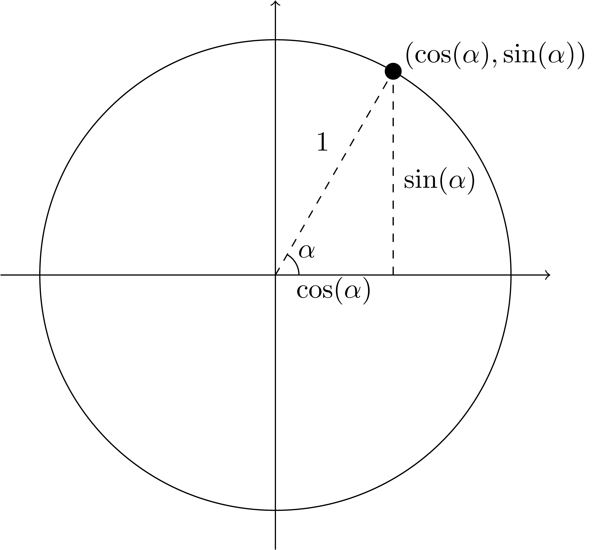

8.8 Trigonometric Functions
The area of trigonometry comes from the combination of τρίγωνον (triangle) and μέτρον (measure) and is the study of the measurements of triangles. The study of the measurements of sides of triangles was known to the ancient Egyptians and Babylonians for the purpose of constructions and land surveys (Boyer & Merzbach, 1991, p. 158). The Greeks expanded on this work with many of our standard trigonometric properties included in Euclid’s Elements. With the growth of astronomy and navigation in the 1500’s trigonometry was expanded to include more identities. The current uses of trigonometric functions include optics, acoustics, electrical engineering, image compression, and computer-generated imagery (CGI).
8.8.1 Definitions
Beginning in fourth grade, students are introduced to right triangles, with a cyclical study of these triangles continuing through middle school, and into high school.
Related Content Standards
- (4.G.2) Classify two-dimensional figures based on the presence or absence of parallel or perpendicular lines, or the presence or absence of angles of a specified size. Recognize right triangles as a category, and identify right triangles.
- (6.G.1) Find the area of right triangles, other triangles, special quadrilaterals, and polygons by composing into rectangles or decomposing into triangles and other shapes; apply these techniques in the context of solving real-world and mathematical problems.
- (8.G.5) Use informal arguments to establish facts about the angle sum and exterior angle of triangles, about the angles created when parallel lines are cut by a transversal, and the angle-angle criterion for similarity of triangles.
- (HSG.SRT.6) Understand that by similarity, side ratios in right triangles are properties of the angles in the triangle, leading to definitions of trigonometric ratios for acute angles.
Our first definitions for the trigonometric functions are based on the properties of right triangles. As such, the initial domain of the trigonometric functions are defined in degrees on \((0^\circ,90^\circ)\). For an angle \(A\), we define the sine of angle \(A\) to be the ratio of the measure of the opposite side, \(a\), and the hypotenuse, \(c\), \[\sin(A) = \frac{a}{c}.\] The cosine of angle \(A\) is the ratio of the measures of the adjacent side, \(b\), and the hypotenuse, \(c\), and the tangent of the angle \(A\) is the ratio of the measures of the opposite side, \(a\), and the adjacent side, \(b\), \[\cos(A) = \frac{b}{c} \quad \mbox{ and } \quad \tan(A) = \frac{a}{b}.\] Similarly for angle \(B\), \[\sin(B) = \frac{b}{c}, \quad \cos(B) = \frac{a}{c}, \quad \mbox{ and } \quad \tan(B) = \frac{b}{a}.\]
We also define the additional trigonometric functions as follows: \[\begin{align*} \mbox{secant of }A &= \sec(A) = \frac{1}{\cos(A)} = \frac{c}{b} \\ \mbox{cosecent of }A &= \csc(A) = \frac{1}{\sin(A)} = \frac{c}{a} \\ \mbox{cotangent of } A &= \cot(A) = \frac{1}{\tan(A)} = \frac{b}{a} \\ \end{align*}\]
While these definitions are sufficient, it is less ambiguous to define the angle, not by the vertex, but by the amount between two line segments.
\[\begin{align*} \alpha + \beta = 90^\circ & & \alpha = 90^\circ - \beta & & \beta=90^\circ - \alpha \\ \cos(\alpha) = \sin(\beta) = \frac{b}{c} & & \tan(\alpha) = \cot(\beta) = \frac{a}{b} & & \sec(\alpha) = \csc(\beta) = \frac{c}{b}\\ \sin(\alpha) = \cos(\beta) = \frac{a}{c} & & \cot(\alpha) = \tan(\beta) = \frac{b}{a} & & \csc(\alpha) = \sec(\beta) = \frac{c}{a} \\ \end{align*}\]
8.8.1.1 Radians and Degrees
The use of \(360^\circ\) to measure angles is likely related to the number of days (365) it takes for the Earth to rotate around the sun. With the advent of calculus it became apparent that a different technique of measuring an angle based on the arc length subtended by the angle was needed. Shortly after his death in 1716 at the age of 33, Roger Cotes published the first definition of the radian angle measurement (1722). (It was in this same work that he wrote \(ix=ln(\cos(x) + i\sin(x))\), the precursor to Euler’s formula.)
A radian is defined to be the angle subtended from by a circular arc whose length is the same as the radius. This means that there are \(2\pi\) radians in a circle, a right angle is \(\frac{\pi}{2}\) radians, and a straight line is \(\pi\) radians.
In order to convert an angle from degrees to radians, one would multiply by \(\frac{\pi}{180^\circ}\). And to convert from radians to degrees would be necessitate multiplying by the reciprocal.
One of the primary benefits of using radians instead of degrees is that for angles near \(0\), \(\sin(\alpha) \approx \alpha\). This simplifies the derivatives of the trigonometric functions and makes for a cleaner series expansion for the trigonometric functions.
In addition, to find the arclength of an angle in radians, one only needs to multiply by the radius, (\(l=\alpha r\)). To find the arclength in for an angle given in degrees we have \(l=\alpha \frac{\pi r}{180^\circ}\).
Related Content Standards
- (HSF.TF.1) Understand radian measure of an angle as the length of the arc on the unit circle subtended by the angle.
8.8.1.2 Unit Circle
Combining the definitions of the trigonometric functions for right triangles with the angles defined by radians we can extend the domain of trigonometric functions to all possible angles using the unit circle. For angles \(\alpha \in \left(0,\frac{\pi}{2} \right)\), we plot a point on the unit circle that is swept out by that angle from the positive horizontal axis. We then form a right triangle from that point by drawing a line segment from the point that is perpendicular to the horizontal axis and draw a line segment from the point to the origin. We can then see that the coordinates of the point are \((\cos(\alpha),\sin(\alpha))\). This also means that the distance along the unit circle from \((1,0)\) to this point is \(\alpha\).
Then, for any angle \(\alpha\) we define \(\sin(\alpha)\) and \(\cos(\alpha)\) to be given by the coordinates on the unit circle whose distance from the point \((1,0)\) along the circle in a counter-clockwise direction is \(\alpha\).
Related Content Standards
- (HSF.TF.2) Explain how the unit circle in the coordinate plane enables the extension of trigonometric functions to all real numbers, interpreted as radian measures of angles traversed counterclockwise around the unit circle.

With this extended definition of sine and cosine, we can define all of our trigonometric functions on a much larger domain. We can see from these definitions that \[\sin:\mathbb{R}\rightarrow [-1,1], \: \cos:\mathbb{R} \rightarrow [-1,1], \mbox{ and }\] \[ \tan: \left( \mathbb{R}\setminus \left\{\frac{\pi}{2} + k\pi: k \in \mathbb{Z}\right\}\right) \rightarrow \mathbb{R}.\]
Since \((\cos(\alpha),\sin(\alpha))\) is defined as a point on the unit circle, we know from the Pythagorean theorem that \(\left(\cos(\alpha)\right)^2 + \left(\sin(\alpha)\right)^2 = 1\). In order to reduce the notation we often write \(\cos^2(\alpha)\) and \(\sin^2(\alpha)\) to represent the square of the function. With this notation we have \[\cos^2(\alpha) +\sin^2(\alpha) = 1.\] This equation can then be rearranged to create the equivalent equations of \[\sec^2(\alpha) -\tan^2(\alpha) = 1 \quad \mbox{ and } \quad \csc^2(\alpha)-\cot^2(\alpha) = 1.\]
Related Content Standards
- (HSF.TF.8) Prove the Pythagorean identity \(\sin^2(\theta) + \cos^2(\theta) = 1\) and use it to find \(\sin(\theta)\), \(\cos(\theta)\), or \(\tan(\theta)\) given \(\sin(\theta)\), \(\cos(\theta)\), or \(\tan(\theta)\) and the quadrant of the angle.
Using the properties of the unit circle we find that the values of the cosine and sine functions repeat with every cycle around the unit circle and so we find that these are periodic functions with a period of \(2\pi\), \[\cos(\alpha) = \cos (\alpha+2\pi) \quad \mbox{ and } \quad \sin(\alpha) = \sin(\alpha+2\pi).\]
Since the negative angles are the rotation in the clockwise direction instead of the counter-clockwise direction we have some additional symmetry, \[\sin(-\alpha)=-\sin(\alpha) \quad \mbox{ and } \quad \cos(-\alpha) = \cos(\alpha),\] and so we see that the sine function is an odd function and the cosine function is an even function.
Related Content Standards
- (HSF.TF.4) Use the unit circle to explain symmetry (odd and even) and periodicity of trigonometric functions.
8.8.2 Additional Properties
8.8.2.1 Angle Addition Formulas
In order to prove the angle addition formula for the sine function we begin by choosing two acute (less than right) angles, \(\alpha\) and \(\beta\), and draw a pair of right triangles so that the hypotenuse of the triangle \(ABC\) is a leg of the triangle \(ACD\), as in the figure below.
We can then draw a line segment through \(D\) perpendicular to \(AB\), and a another line segment perpendicular to this new line and through the point \(C\).
We now have that \[\sin\left(\alpha+\beta\right) = \frac{DE}{AD}\] and that \(DE=DF+EF\), and since \(EF=BC\) we have that \[\sin\left(\alpha+\beta\right) = \frac{DF+BC}{AD}= \frac{DF}{AD} + \frac{BC}{AD}\]
We can also view \(AC\) as a transversal to the parallel lines \(AB\) and \(CF\) so that the angle \(\angle ACF=\alpha\) and also \(\angle FDC = \alpha\). This means that \(\cos(\alpha) = \frac{DF}{CD}\). We can then rewrite the angle addition equation as
\[\sin\left(\alpha+\beta\right) = \frac{DF}{CD}\frac{CD}{AD} + \frac{BC}{AC}\frac{AC}{AD} =\cos(\alpha) \sin(\beta) + \sin(\alpha) \cos(\beta).\]
In order to prove the angle addition formula for the cosine function we can see that
\[\begin{align*} \cos(\alpha+\beta) &= \sin\left(\frac{\pi}{2} - \alpha - \beta\right) \\ &= \sin \left( \left(\frac{\pi}{2}-\alpha\right) + (-\beta) \right) \\ &= \cos\left(\frac{\pi}{2}-\alpha\right) \sin(-\beta)+\sin\left(\frac{\pi}{2}-\alpha\right)\cos(-\beta) \\ &= \sin(\alpha)\left(-\sin(\beta)\right) +\cos(\alpha)\cos(\beta) \\ &= \cos(\alpha) \cos(\beta) - \sin(\alpha) \sin(\beta) \end{align*}\]
Another proof of both of these identities involves can be constructed from the following diagram.

If the angles are obtuse, then one can use the symmetry of the sine and cosine functions to change the angle addition into a sum of angles that are acute.
Related Content Standards
- (HSF.TF.9) Prove the addition and subtraction formulas for sine, cosine, and tangent and use them to solve problems.
If we use Euler’s equation, \(e^{iy} = \cos(y) + i \sin(y)\), we can prove the angle addition formulas using properties of exponents and the addition and multiplication operations. We can write \(e^{i(\alpha+\beta)}\) in two ways: \[\begin{align*} e^{i(\alpha+\beta)} &= e^{i\alpha} \cdot e^{i\beta} = (\cos(\alpha) + i \sin(\alpha) ) (\cos(\beta) + i \sin(\beta))\\ &= \left( \cos(\alpha)\cos(\beta)-\sin(\alpha)\sin(\beta)\right) + i \left( \sin(\alpha)\cos(\beta) + \cos(\alpha)\sin(\beta)\right) \\ e^{i(\alpha+\beta)} &= \cos(\alpha+\beta) + i \sin(\alpha+\beta) \end{align*}\] Then by equating the real part and imaginary parts of these two representations we have the angle addition formulas.
Related Content Standards
- (HSG.SRT.10) Prove the Laws of Sines and Cosines and use them to solve problems.
- (HSG.SRT.11) Understand and apply the Law of Sines and the Law of Cosines to find unknown measurements in right and non-right triangles (e.g., surveying problems, resultant forces).
Proof. If the triangle has a right angle, then the law of sines follows directly from the definition of the sine function. So we may assume that we have a triangle, \(\triangle\,ABC\), without any right angles.
Then \(\angle ABC\) can be acute or obtuse. In each case, draw the altitude from the vertex at \(C\) to the side \(AB\). In the acute triangle the altitude lies inside the triangle, while in the obtuse triangle the altitude lies outside the triangle.
Let \(h\) be the height of the altitude. For each triangle we see that \[\frac{h}{b} = \sin(A) \quad \mbox{ and } \quad \frac{h}{a} = \sin(B),\] since \(\frac{h}{a} = \sin(\pi - B) = \sin(B)\) because of the symmetry of the sine function. Thus, solving for \(h\) and substituting that into the previous equation gives \[{a\sin(B)} = b\sin(A) \quad \mbox{ or equivalently } \quad \frac{\sin(A)}{a} = \frac{\sin(B)}{b}.\]
By a similar argument, drawing the altitude from \(A\) to \(BC\) gives \[\frac{\sin(C)}{c} = \frac{\sin(B)}{b}.\] We then combine these to complete our proof.
There are many different proofs of the Law of Cosines. We include one from the perspective of analytic geometry.
Proof. We are able to create a system of coordinates on the plane in order to align the point \(C\) with the origin and point \(B\) on the positive real axis at the point \((a,0\).
We can then use the distance formula to find the distance from \(A\) to \(C\) as \[c^2=\left(b\cos(\theta)-a\right)^2 + (b\sin(\theta))^2= b^2 \cos^2(\theta)-2ab\cos(\theta) + a^2 + b^2 \sin^2(\theta)\] We can then rearrange the terms and use the property that \(b^2\cos^2(\theta) + b^2\sin^2(\theta) = b^2\) to see that \[c^2=a^2+b^2 -2ab\cos(C)\]
8.8.3 Graphs of Trigonometric Functions
Using the definitions of the sine and cosine functions from the unit circle we can sketch their graphs as a function of the angle in radians.
We can then look at the family of functions generated from these two functions. One thing to notice is that the sine function is a horizontal shift of the cosine function, \(\sin(x)=\cos\left(x-\frac{\pi}{2}\right)\). Because of this, we will only look at the family of functions generated from the cosine function. This family of functions is all of the functions of the form
\[f(x)=a \cos\left(b(x-h)\right) +k\]
for real numbers \(a\), \(b\), \(h\), and \(k\).

Related Content Standards
- (HSF.TF.5) Choose trigonometric functions to model periodic phenomena with specified amplitude, frequency, and midline.
We can also sketch the base graphs of the other trigonometric functions noticing that the domain of these functions will not include certain values as we cannot divide by zero and have a real number. We will give the graphs of the tangent and secant functions, with the graphs of the cotangent and cosecant functions being similar.


8.8.4 Inverse Trigonometric Functions
From Section 5.3, we see that a function is invertible if, and only if, it is a bijection. We can look at the graphs of the sine and cosine functions and see that they are definitely not bijections when thought of as functions from \(\mathbb{R}\) to \(\mathbb{R}\).
However, if we restrict the domain and co-domain of the functions, these new functions are invertible.
For the cosine function, we restrict the domain to \([0,\pi]\) in order to find the maximum region on which the function is an injection and is onto the range of the original function, \([-1,1]\). While there are many options for this choice, we choose the option that includes the first quadrant to correspond with the definitions of the functions for right triangles.
This function is now invertible and so we call its inverse function arcosine and denote it \[\arccos:[-1,1]\rightarrow [0,\pi] \quad \mbox{ or } \quad \cos^{-1}:[-1,1]\rightarrow [0,\pi].\]
Similarly we will restrict the sine function to the largest domain that includes the first quadrant for which the function is an injection.
We then call the inverse function of this restricted domain function the arcsine and denote it \[\arcsin:[-1,1] \rightarrow \left[\frac{-\pi}{2}, \frac{\pi}{2}\right] \quad \mbox{ or } \quad \sin^{-1}:[-1,1] \rightarrow \left[\frac{-\pi}{2}, \frac{\pi}{2}\right].\]
We can then say that the arcsine of a number, \(x\), between \(-1\) and \(1\) is the angle, \(\theta\), between \(-\frac{\pi}{2}\) and \(\frac{\pi}{2}\) so that \(\sin(\theta) = x\). With a similar interpretation for the arccosine.
We can similarly restrict the domain and co-domain of the tangent, cotangent, secant, and cosecant functions to be invertible. Our choice of domains for these functions depend upon including the origin, if possible, and to have the function be increasing on the intervals of its domain.
\[\begin{align*} & \tan:\left( -\frac{\pi}{2},\frac{\pi}{2} \right) \rightarrow (-\infty,\infty) & & \tan^{-1}: (-\infty,\infty) \rightarrow \left( -\frac{\pi}{2},\frac{\pi}{2} \right) \\ & \cot:\left( 0,\pi\right) \rightarrow (-\infty,\infty) & & \cot^{-1}: (-\infty,\infty) \rightarrow \left( 0,\pi\right) \\ & \sec: \left[0,\frac{pi}{2}\right) \cup \left(\frac{\pi}{2},\pi\right] \rightarrow (-\infty,1]\cup [1,\infty) & & \sec^{-1}: (-\infty,1]\cup [1,\infty) \rightarrow \left[0,\frac{pi}{2}\right) \cup \left(\frac{\pi}{2},\pi\right] \\ & \csc: \left[-\frac{\pi}{2},0\right) \cup \left( 0,\frac{\pi}{2}\right] \rightarrow (-\infty,1]\cup [1,\infty) & & \csc^{-1}: (-\infty,1]\cup [1,\infty)\rightarrow \left[-\frac{\pi}{2},0\right) \cup \left( 0,\frac{\pi}{2}\right] \\ \end{align*}\]
Related Content Standards
- (HSF.TF.6) Understand that restricting a trigonometric function to a domain on which it is always increasing or always decreasing allows its inverse to be constructed.
- (HSF.TF.7) Use inverse functions to solve trigonometric equations that arise in modeling contexts; evaluate the solutions using technology, and interpret them in terms of the context.
8.8.5 Exercises
- A billboard with a height of \(6\) feet is mounted on the side of a building with its bottom edge at a \(4\) feet above the street. At what distance \(g\) along the ground should an observer stand from the building to get the best view?
- Find the shortest length of a ladder that can be placed against the wall of the house above the 4 foot fence that is placed 3 feet from the house.
References
Boyer, C. B., & Merzbach, U. C. (1991). A history of mathematics (2nd ed.). John Wiley & Sons, Inc.
Cotes, R. (1722). Harmonia mensurarum. Cambridge.